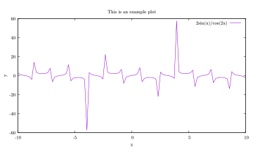
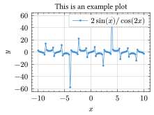
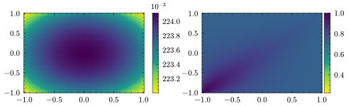

Plotting with live preview in Typst with Lilaq
Plotting is a chore
Beyond using the program’s default plotting library, such as in MATLAB or Mathematica, the most dominant plotting libraries in science are most likely Python’s Matplotlib and R’s ggplot, with Julia’s Makie.jl or Plots.jl steadily gaining traction1.
These are great of course, but plotting with them has always been a chore to me. I don’t know about you, but for me, some of the most boring parts of my work is writing the same templates of codes over and over again. You know, initializing a bunch of empty lists/arrays, looping over some parameters, then adding computation results to them etc.
In the case of plotting, this comes in the form of creating Figure and Axis objects, looping over subplot indices, messing with the levels of the colormap etc. Of course, one can easily plot something quick and dirty, but if I want something complicated or at least presentable, I have to write a bunch of boilerplate code, especially if I want more advanced layouts.
While the elegant grammar of graphics workflow of ggplot (and more recently Tidier.jl), can ease this pain for complicated plots, some old-schoolers still swear by the simple but powerful gnuplot. Being a lightweight command line program, gnuplot2 is favored for quick and boilerplate-free plotting.
2 Pronounced “NEWplot” as in the animal gnu (US pronunciation), and has nothing to do with the GNU project, pronounced “GNOO”.
Here’s an example where a nice figure can be plotted with no boilerplate code in gnuplot. There’s no importing of libraries or creating of Figure or Axis objects etc.
set title "This is an example plot"
set xlabel "x"
set ylabel "y"
set samples 100
plot [-10:10] 2*sin(x)/cos(2*x) title "2sin(x)/cos(2x)"import numpy as np
import matplotlib.pyplot as plt
x = np.linspace(-10, 10, 100)
y = 2 * np.sin(x) / np.cos(2 * x)
plt.figure()
plt.plot(x, y, label=r'$2\sin(x)/\cos(2x)$')
plt.title("This is an example plot")
plt.xlabel("x")
plt.ylabel("y")
plt.legend()using CairoMakie
x = range(-10, 10, 100)
y = @. 2sin(x) / cos(2x)
fig = Figure()
ax = Axis(fig[1, 1],
title = "This is an example plot",
xlabel = "x",
ylabel = "y")
lines!(ax, x, y, label = L"2\sin(x)/\cos(2x)")
axislegend()library(ggplot2)
x <- seq(-10, 10, length.out = 100)
y <- 2 * sin(x) / cos(2 * x)
df <- data.frame(x = x, y = y)
ggplot(df, aes(x = x, y = y)) +
geom_line() +
labs(title = "This is an example plot",
x = "x",
y = "y",
caption = expression(2 * sin(x) / cos(2 * x)))
And a slightly more complicated example where we plot data from a CSV file (I don’t even want to write the Matplotlib, Makie.jl, and ggplot versions of this).
set nokey # turn off legend
set datafile separator ","
set pm3d at bs # plot at bottom and surface
set dgrid3d 100,100
set multiplot layout 1,2
splot "data.csv" using 2:3:5 with pm3d
splot "data.csv" using 2:3:12 with pm3d
unset multiplot
Being a separate program from where your data are typically computed/generated3, gnuplot requires one to save their data out into some data format, such as CSV, before loading into gnuplot to perform the plotting. Putting aside the fact that this is good programming practice for scientists in general, this is powerful because the same gnuplot script can quickly visualize different datasets in a consistent manner.
3 Though there’s actually various libraries that calls gnuplot without leaving your favorite programming language, e.g., gnuplotlib, Gaston.jl, RustGnuplot, and various others.
4 Interestingly, there is now also Gridpaper by Harish Narayanan, which uses gnuplot compiled to WebAssembly under the hood.
Nevertheless, even though I love gnuplot, it shares a common problem with the other plotting libraries (and most programming languages) in that iterating between plots are slow. Maybe I am spoilt by the Read-eval-print loop of Lisp, but I wish plotting is more interactive or responsive, like Desmos4, instead of the same old: save file, run it, wait, and repeat because you realized you made a mistake. Of course, one can set up Jupyter notebook widgets or a Shiny dashboard for interactivity, but then we are back to writing boilerplate codes.
Enters Typst and Lilaq
I have mentioned Typst before, as well as the plotting library Lilaq, lauding the former for its fast live preview due to its incremental compilation. Specifically, the tinymist LSP is able to trigger the preview “on type”, i.e., with every keystroke5.
5 Or one can use the web app which also has instant live preview.
#import "@preview/lilaq:0.5.0" as lq
#set page(margin: 0.5em, height: auto, width: auto)
#let xs = lq.linspace(-10, 10, num: 100)
#let ys = xs.map(x => 2*calc.sin(x) / calc.cos(2*x))
#lq.diagram(
lq.plot(xs, ys, label: $2sin(x)\/cos(2x)$),
xlabel: $x$,
ylabel: $y$,
title: "This is an example plot"
)set title "This is an example plot"
set xlabel "x"
set ylabel "y"
set samples 100
plot [-10:10] 2*sin(x)/cos(2*x) title "2sin(x)/cos(2x)"import numpy as np
import matplotlib.pyplot as plt
x = np.linspace(-10, 10, 100)
y = 2 * np.sin(x) / np.cos(2 * x)
plt.figure()
plt.plot(x, y, label=r'$2\sin(x)/\cos(2x)$')
plt.title("This is an example plot")
plt.xlabel("x")
plt.ylabel("y")
plt.legend()using CairoMakie
x = range(-10, 10, 100)
y = @. 2sin(x) / cos(2x)
fig = Figure()
ax = Axis(fig[1, 1],
title = "This is an example plot",
xlabel = "x",
ylabel = "y")
lines!(ax, x, y, label = L"2\sin(x)/\cos(2x)")
axislegend()library(ggplot2)
x <- seq(-10, 10, length.out = 100)
y <- 2 * sin(x) / cos(2 * x)
df <- data.frame(x = x, y = y)
ggplot(df, aes(x = x, y = y)) +
geom_line() +
labs(title = "This is an example plot",
x = "x",
y = "y",
caption = expression(2 * sin(x) / cos(2 * x)))
I would argue that while we sacrificed some conciseness and brevity for responsiveness as compared to gnuplot, this is a little better than Matplotlib and Makie.jl. Not to mention first-class Math support like LaTeX.
#import "@preview/lilaq:0.5.0" as lq
#set page(margin: 0.5em, height: auto, width: auto)
#let data = lq.load-txt(read("data.csv"), header: true)
#let z1 = array.zip(..data.E.chunks(100, exact: true))
#let z2 = array.zip(..data.Em.chunks(100, exact: true))
#let colormesh1 = lq.colormesh(data.xA.dedup(), data.xB.dedup(), z1)
#let colormesh2 = lq.colormesh(data.xA.dedup(), data.xB.dedup(), z2)
#lq.diagram(colormesh1)
#lq.colorbar(colormesh1)
#lq.diagram(colormesh2)
#lq.colorbar(colormesh2)set nokey
set datafile separator ","
set pm3d at b
set view map
set dgrid3d 100,100
set multiplot layout 1,2
splot "data.csv" using 2:3:5 with pm3d
splot "data.csv" using 2:3:12 with pm3d
unset multiplot
Lilaq is still little verbose, particularly the reshaping of the data into a 2D array for the plotting of the colormesh in this case, which gnuplot takes care of automatically with set dgrid3d 100,100.
Still, the interactivity and responsiveness is great especially for data exploratory work.
Is it really that important?
To be honest, not really.
In scientific computing, many encounters the “two-language problem”, where the initial prototyping and exploratory research work is performed in a programming language that is highly productive or interactive, such as Python, R, or MATLAB.
However, when the exploratory work is done and when one require fast number crunching (say in a supercomputer), one has to rewrite the program (or at least the computationally expensive parts) in a high-performance language such as C, C++, Fortran, or Rust.
Julia aims to solve this problem with just-in-time (JIT) compilation and LLVM6, combining the syntax and interactivity of dynamic languages, with the performance and speed of statically-typed languages.
6 There is now also LFortran that attempts the same, also with LLVM.
While the context is obviously not the same, you could say that I’m looking for a “Julia” of plotting. Using plotting libraries such as Matplotlib for complicated plots is like the worst of both worlds: bloated code yet (relatively) slow iteration of plots.
Why can’t we have the best of both worlds instead: plot with stupid simple syntax and see the results instantly as we change the code? I believe gnuplot and Lilaq are the closest we have to this right now, approaching this ideal from the two opposite ends of simple syntax and instant preview, respectively.